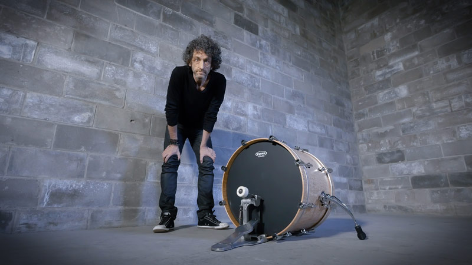

-
Jojo Mayer “Секретное оружие для современного барабанщика”.

Одна из наиболее полных и подробных работ по технике рук заинтересует барабанщиков вне зависимости от возраста, уровня игры и музыкального стиля. Трехчасовой двойной DVD, две трети которого Jojo сидит за пэдом, освещает широкий круг информации по технике игры, от фундаментальных основ до сложных нюансов для продвинутых. “Секртное оружие” — это не просто превосходный учебный метод или справочный материал, это и вдохновляющяя артистичность, музыкальная философия и новаторский технический подход одного из наиболее прогрессивных на сегодня исполнителя и преподавателя. В видеошколе освещаются темы: Основы техники и физика драмминга Анализ постановки рук, симметричный и традиционный захват, отскок и замок большого и указательного пальцев, техники Gladstone, Moeller и техника пальцев Гибридные техники: push–pull, drop–bounce, reverse stroke и one&handed roll Упражнения на развитие скорости, чёткой игры, выносливости, мощности и сноровки Концепции по выявлению и преодолению технических барьеров Разминочные и тренировочные упражнения. Перейти к обучению.
-
Jojo Mayer — A Guide to Foot Technique.
Наиболее полное руководство по технике игры ногами на барабанах! Jojo Mayer раскрывает огромное количество техник игры ногами — от основных фундаментальных до самых невероятных. Все объяснения игры ногами на бас–барабане сопровождаются визуализацией, все техники описываются шаг за шагом, чтобы и начинающему, и опытному барабанщику была понятна объясняемая техника игры ногами на бочке или хай-хэте. Жожо Маер также описывает собственную технику игры ногами. В этой видеошколе вы найдете фундаментальные техники игры ногами как heel–down и heel–up. Как играть двойки, техника heel–toe. Также включено раскрытие темы истории барабанной бас–педали, из чего устроена педаль барабанщика.В видеошколе Jojo Mayer — “Техника игры ногами” раскрывается тема скоростной игры ногами, контроля, баланса, регулировки высоты посадки. Перейти к обучению.